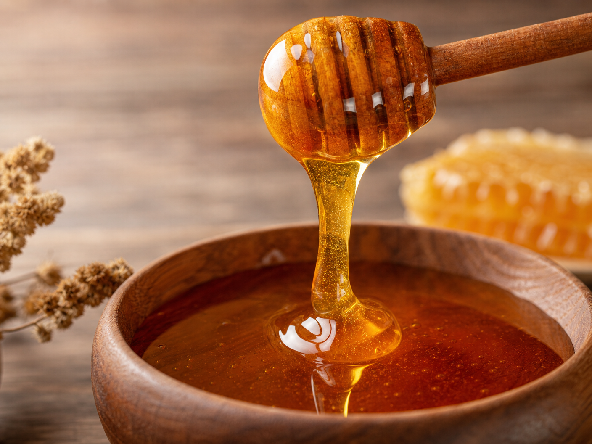
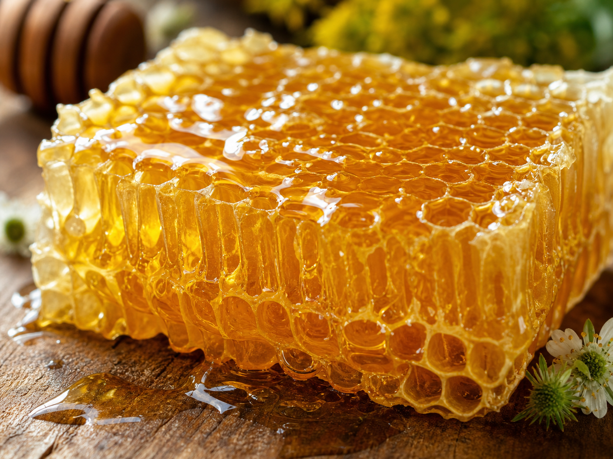

Slovenský "zlatý rituál", ktorý mení životy seniorov
Objavte silu prírodného mechanizmu, ktorý pomáha udržiavať bystrosť a energiu aj po 60-tke.

ZISTIŤ VIAC TUNa Slovensku sa v posledných mesiacoch čoraz viac hovorí o návrate k čistým prírodným zdrojom. Nejde o žiadnu novú technológiu, ale o znovuobjavenie "tekutého zlata", ktoré naši predkovia uctievali po stáročia. Reč je o medovom rituáli, ktorý moderná veda začína vnímať v úplne novom svetle.
Odborníci na naturálnu medicínu zistili, že špecifický spôsob konzumácie tohto prírodného daru môže výrazne podporiť prirodzené funkcie nášho tela. Tento mechanizmus nie je o kvantite, ale o kvalite a správnom načasovaní, ktoré pomáha udržiavať myseľ v bdelom stave počas celého dňa.

Prečo je tento rituál taký dôležitý práve pre staršiu generáciu? S pribúdajúcim vekom naše telo hľadá spôsoby, ako si udržať rovnováhu. Tento prírodný mechanizmus ponúka jemnú, ale účinnú cestu, ako podporiť koncentráciu bez zbytočných chemických prísad.
Krátka video prezentácia, ktorá sa stala hitom na slovenskom internete, odhaľuje presný postup tohto rituálu. Vysvetľuje, prečo je tento konkrétny typ prírodného extraktu taký výnimočný a ako ho môžete zaradiť do svojho rána už zajtra.